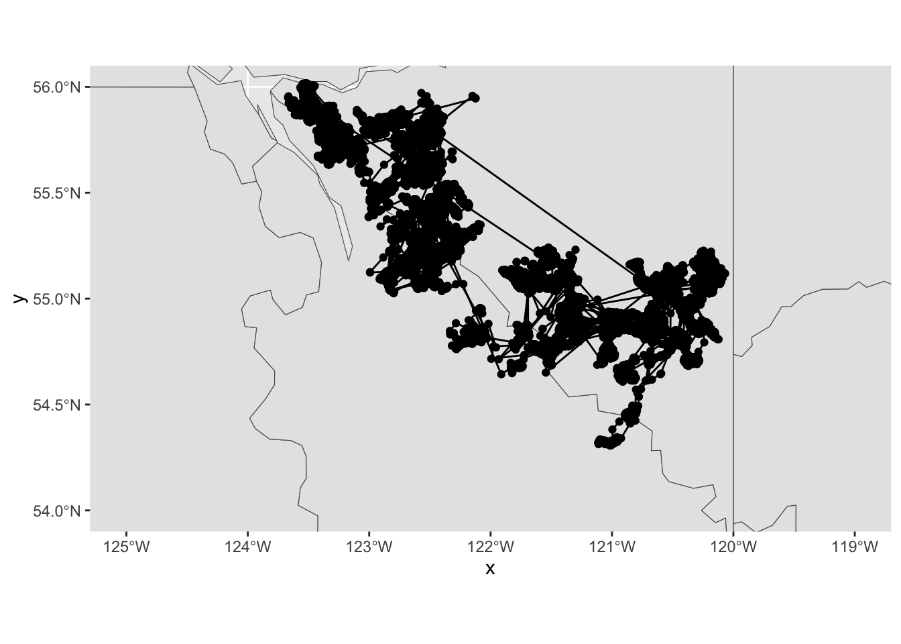

# loading the dataset
load(here::here("data/toy/sim_network.RData"))1 Network Analysis Experimentation
1.1 27th Feb 2025
The toy dataset structure:
nodes
- id
- lat
- lon
- type: either age_care or hospital
- size
edges
- from
- to
- timestamp
- reason: chest pain, breathing issue, injury, stroke, seizures, and high fever (from ChatGPT)
head(edges)# A tibble: 6 × 4
from to timestamp reason
<dbl> <dbl> <dttm> <chr>
1 16 9 2025-01-21 12:00:00 high_fever
2 1 12 2025-01-29 02:00:00 seizures
3 13 8 2025-02-10 05:00:00 breathing_issue
4 6 4 2025-01-19 11:00:00 high_fever
5 7 1 2025-01-28 04:00:00 injury
6 19 20 2025-01-11 06:00:00 chest_pain head(nodes)# A tibble: 6 × 5
id lat lon type size
<dbl> <dbl> <dbl> <chr> <dbl>
1 1 -37.2 145. age_care 451
2 2 -37.7 145. hospital 337
3 3 -37.4 145. hospital 473
4 4 -37.8 145. hospital 119
5 5 -37.7 145. hospital 147
6 6 -37.6 145. hospital 4561.1.1 Trying geomnet package
The data structure for the geomnet package combines two sources of information, node description and the relationship between nodes (vertices), into one dataset using the fortify methods. The supported classes are “network” from sna and network packages, “igraph” from the igraph package, “adjmat”, and “edgedf” (classes from geomnet).
The as.edgedf() only works with data.frame object.
edges <- edges |>
mutate(from = factor(from, levels = seq(1:20)),
to = factor(to, levels = seq(1:20)))
nodes <- nodes |>
mutate(id = factor(id, levels = seq(1:20)))
edges_data <- as.data.frame(edges)
nodes_data <- as.data.frame(nodes)Combining the edges and nodes
network_data <- fortify(as.edgedf(edges_data), nodes_data)
head(network_data)geomnet package is not working.
# Not working
ggplot(data = network_data,
aes(from_id = from_id, to_id = to_id)) +
geom_net()There is a problem in the geom_net function where it said, “The first two columns of x must be of the same type.” It also happens with the provided code in the geomnet package. Still not sure why.
https://rdrr.io/github/statnet/network/src/R/dataframe.R
1.2 6th Mar 2025
1.2.1 tidygraph
The tidygraph provides a tidy API for graph manipulation. The network data can be seen as two tidy tables, one for node data and one for edge data. This package provides a way to switch between the two tables and provides dplyr verbs for manipulating the data. A lot of graph algorithms in igraph is also accessible through this package.
tidygraph_structure <- tbl_graph(nodes, edges)1.2.1.1 Example
Change the size to a thousand. It is somewhat similar to cubble where I must activate the table I want to manipulate.
tidygraph_structure |>
activate(nodes) |>
mutate(size = size/1000) |>
activate(edges) |>
mutate(reason = toupper(reason))# A tbl_graph: 20 nodes and 92 edges
#
# A bipartite multigraph with 1 component
#
# Edge Data: 92 × 4 (active)
from to timestamp reason
<int> <int> <dttm> <chr>
1 16 9 2025-01-21 12:00:00 HIGH_FEVER
2 1 12 2025-01-29 02:00:00 SEIZURES
3 13 8 2025-02-10 05:00:00 BREATHING_ISSUE
4 6 4 2025-01-19 11:00:00 HIGH_FEVER
5 7 1 2025-01-28 04:00:00 INJURY
6 19 20 2025-01-11 06:00:00 CHEST_PAIN
7 18 10 2025-01-19 01:00:00 INJURY
8 16 14 2025-01-31 20:00:00 CHEST_PAIN
9 11 10 2025-02-06 15:00:00 HIGH_FEVER
10 10 6 2025-02-08 23:00:00 SEIZURES
# ℹ 82 more rows
#
# Node Data: 20 × 5
id lat lon type size
<fct> <dbl> <dbl> <chr> <dbl>
1 1 -37.2 145. age_care 0.451
2 2 -37.7 145. hospital 0.337
3 3 -37.4 145. hospital 0.473
# ℹ 17 more rows1.2.2 sfnetworks
The sfnetworks allow us to extend the graph into the domain of geospatial data analysis, where each observation has a location in geographical space. The sf package is the driving force for this package. It is one of the common packages used when working with geospatial data.
nodes_sf <- st_as_sf(nodes, coords = c("lat", "lon"))
sfnetwork_obj <- sfnetwork(nodes_sf, edges)Checking if spatial network structure is valid...Spatial network structure is valid1.2.2.1 My first network plot
autoplot(sfnetwork_obj)Spatially implicit edges are drawn as linesFALSE1.3 13th Mar 2025
1.3.1 geospatial
It is the two sf objects, one describing the node and one describing the edge data. With the geospatial objects, there are many ways to specify the layouts in the ggraph.
# loading caribou data
load(here::here("data/caribou/caribou.RData"))head(locations)# A tibble: 6 × 7
event_id animal_id study_site season timestamp longitude latitude
<dbl> <chr> <chr> <chr> <dttm> <dbl> <dbl>
1 2259197332 GR_C01 Graham Winter 2001-02-21 05:00:00 -123. 56.2
2 2259197333 GR_C01 Graham Winter 2001-02-21 09:00:00 -123. 56.2
3 2259197334 GR_C01 Graham Winter 2001-02-21 13:00:00 -123. 56.2
4 2259197335 GR_C01 Graham Winter 2001-02-21 17:01:00 -123. 56.2
5 2259197336 GR_C01 Graham Winter 2001-02-21 21:00:00 -123. 56.2
6 2259197337 GR_C01 Graham Winter 2001-02-22 01:00:00 -123. 56.2head(individuals)# A tibble: 6 × 14
animal_id sex life_stage pregnant with_calf death_cause study_site
<chr> <chr> <chr> <lgl> <lgl> <chr> <chr>
1 HR_151.510 f <NA> NA NA <NA> Hart Ranges
2 GR_C04 f <NA> NA NA <NA> Graham
3 GR_C03 f <NA> NA NA <NA> Graham
4 HR_151.805 f <NA> NA NA <NA> Hart Ranges
5 HR_151.760 f <NA> NA NA <NA> Hart Ranges
6 HR_151.720 f <NA> NA NA <NA> Hart Ranges
# ℹ 7 more variables: deploy_on_longitude <dbl>, deploy_on_latitude <dbl>,
# deploy_on_comments <chr>, deploy_off_longitude <dbl>,
# deploy_off_latitude <dbl>, deploy_off_type <chr>, deploy_off_comments <chr>Trying one individual caribou.
# for multiple caribous
keep <- individuals |>
filter(!is.na(death_cause)) |>
pull(animal_id)
# KE_car027
ke_car027 <- locations |>
filter(animal_id == "KE_car027") |>
mutate(event_id = as.character(event_id)) |>
arrange(animal_id, timestamp)
multiple_car <- locations |>
filter(animal_id %in% keep) |>
mutate(event_id = as.character(event_id)) |>
arrange(animal_id, timestamp)Apparently, if the id column is double when joining the data using sfnetwork, R crashes. Since the event_id is “2282779430” storing it as double is too large. (this took me a long time to figure out)
nodes <- multiple_car |>
select(event_id, latitude, longitude, season) |>
rename(id = event_id)
edges <- multiple_car |>
select(event_id, timestamp) |>
mutate(to = lead(event_id)) |>
rename(from = event_id) |>
filter(!is.na(to))
nodes_ke <- ke_car027 |>
select(event_id, latitude, longitude, season) |>
rename(id = event_id)
edges_ke <- ke_car027 |>
select(event_id, timestamp) |>
mutate(to = lead(event_id)) |>
rename(from = event_id) |>
filter(!is.na(to))Converting the nodes to the sf object.
nodes_sf <- st_as_sf(nodes, coords = c("longitude", "latitude"), crs = st_crs(4326))
# combining nodes and edges
caribou_path <- sfnetwork(nodes_sf, edges)Checking if spatial network structure is valid...Spatial network structure is validnodes_ke_sf <- st_as_sf(nodes_ke, coords = c("longitude", "latitude"), crs = st_crs(4326))
ke_path <- sfnetwork(nodes_ke_sf, edges_ke)Checking if spatial network structure is valid...
Spatial network structure is valid1.3.2 Draw a plot using ggraph
The geospatial layout in the ggraph can be specified both as a function or data frame object.
# function way
layout_sf <- function(graph) {
graph <- activate(graph, nodes)
x <- sf::st_coordinates(graph)[, "X"]
y <- sf::st_coordinates(graph)[, "Y"]
data.frame(x, y)
}
# data frame way
x <- sf::st_coordinates(ke_path)[, "X"]
y <- sf::st_coordinates(ke_path)[, "Y"]
layout <- data.frame(x, y)The layout argument can be switched between the function and data frame.
ggraph(ke_path, layout = layout_sf) +
geom_node_point(size = 0.5) +
geom_edge_link(arrow = arrow(length = unit(0.1, "inches")))Using the sf layout.
ggraph(ke_path, layout = 'sf') +
geom_node_sf() +
geom_edge_link()Not sure about the warning (need to look further). Intuitively, I should be able to overlay this onto the map.
# getting world map
world <- rnaturalearth::ne_countries(scale = "medium", returnclass = "sf")
ggraph(caribou_path, 'sf') +
geom_sf(data = canadianmaps::CD) +
geom_node_sf() +
geom_edge_link() +
theme_grey() +
coord_sf(xlim = c(-125, -119), ylim = c(54, 56))
ggraph(caribou_path, 'sf') +
geom_polygon(data = map_data("world"), mapping = aes(x = long, y = lat, group = group)) +
geom_node_sf() +
geom_edge_link() +
theme_grey()There is a problem with the ggraph where its coordinates do not match with the sf. I will need to figure this out. (It is fixed now.)
Next step:
- Need to try linestring geometry.
- Start doing an analysis on the caribou dataset.